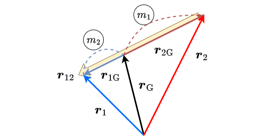
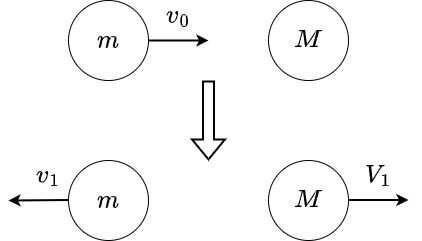
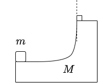

4 運動量，運動エネルギーと仕事，２体問題
4.1 運動量
運動方程式はそれ単体でかなりの現象を説明するものですが，世の中にはあまりにも多くの粒子が複雑に互いに力を及ぼし合っているので，解析し切ることができることが難しいことが多いです．
そんな中で，前章でも述べた通り，多粒子を考える方法はあり，これからはその方法の一つを考えることにしましょう．
まず，言葉の定義として，運動量について紹介します．
とある物体が質量 \(m\) ，速度 \(\bm{v}\) を持っている時，その物体の運動量 \(\symbfit{p}\) を次のように定義する．
\[\symbfit{p}=m\symbfit{v}\]
つまり，運動方程式は次のようにかけます． \[\dot{\symbfit{p}}=\symbfit{F}\] 多粒子系について考えましょう．前章と同様，とある場所に \(n\) 個の粒子があり，それらが互いに力を及ぼしながら，外からも力を受けているとしましょう．その時， \(i\) 番目の粒子の運動方程式は \[ \begin{aligned} \dot{\symbfit{p}_i} = \sum_j \symbfit{F}_{ij} + \symbfit{F}_{i\text{out}} \end{aligned} \] ここで， \(\symbfit{F}_{ij}\) は \(j\) 番目の粒子が \(i\) 番目の粒子に及ぼす力であり， \(\symbfit{F}_{i\text{out}}\) は \(i\) 番目の粒子が受ける外力です．この式を全ての \(i\) について足し合わせることによって， \[ \begin{aligned} \sum_i \dot{\symbfit{p}_i} &= \sum_i\sum_j \symbfit{F}_{ij} + \sum_i\symbfit{F}_{i\text{out}} \end{aligned} \] 作用反作用の法則によって， \(\sum_i\sum_j \symbfit{F}_{ij}\) となるので， \[ \begin{aligned} \sum_i \dot{\symbfit{p}_i} &= \sum_i\symbfit{F}_{i\text{out}} \end{aligned} \] ここで外力がないとすると， \[ \begin{aligned} \sum_i \dot{\symbfit{p}_i} &= \symbfit{0}\\ \dv{t}\sum_i \symbfit{p}_i &= \symbfit{0}\\ \sum_i \symbfit{p}_i &= \textbf{Const.}=M_{\text{tot}}\dot{\symbfit{r}}_{\text{G}} \end{aligned} \] このような結果が得られるわけです．このようにある値が定数であり続けることを，値が保存していると呼ばれます．また，全運動量の合計は，全質量と重心速度の積によって表すことができることもわかりました．以上をまとめると，
外力の働かない系では，全運動量が保存する．また，系の全運動量 \(\symbfit{P}\) は
\[\symbfit{P}=M_{\text{tot}}\symbfit{v}_{\text{G}} \]
で表すことができる．
ここで，重心の定義を考えた時， \[ \begin{aligned} \sum_i m_i (\symbfit{r}_i-\symbfit{r}_\text{G})=\sum_i m_i \symbfit{r}_{i\text{G}}=\symbfit{P}_{\text{in}}=\symbfit{0} \end{aligned} \]
ここで， \(\symbfit{P}_{\text{in}}\) 重心から見た物体内部の全運動量ということで，内部運動量と呼ばれています．つまり，
::: {.Tbox data-latex=“{定理}”} 定理
任意の系を，重心を原点とする座標系で見れば，全運動量は \(\symbfit{0}\) となる．別の言い方をすれば，内部運動量は常に \(\symbfit{0}\) となる．
:::
宇宙の外力の及ばない場所に星がひとつあった．その星の中で何らかの現象が起き，その結果，二つの星が出来上がり，片方は質量 \(m_1\) で速度 \(\symbfit{v_1}\) だった．もう片方の質量が \(m_2\) だった時の速度を求めよ．
\[m_1\symbfit{v_1}+m_2\symbfit{v_2}=\symbfit{0}\] \[\symbfit{v_2}=-\frac{m_1}{m_2}\symbfit{v_1}\]
4.2 運動エネルギー
運動方程式の両辺に \(\symbfit{v}\) を内積でかけてやることによって， \[m\dot{\symbfit{v}}\cdot \symbfit{v}=\symbfit{F}\cdot\symbfit{v}\] この左辺は， \[m\dot{\symbfit{v}}\cdot \symbfit{v}=\dv{t}\left(\frac{1}{2}m\symbfit{v}\cdot \symbfit{v}\right)=\dv{t}\left(\frac{1}{2}mv^2\right)\] と計算されるので， \[\dv{t}\left(\frac{1}{2}mv^2\right)=\symbfit{F}\cdot\symbfit{v}\] ここで，左辺の被微分部分の \(mv^2/2\) は物体の運動エネルギーと呼ばれ，右辺は仕事率と呼ばれています．
両辺を \(t=t_0\) から \(t=t_1\) で積分してやれば，それぞれの時刻における速度や位置を \(\symbfit{v_0},\:\symbfit{v_1},\:\symbfit{r_0},\:\symbfit{r_1}\) などとおけば， \[ \begin{aligned} \frac{1}{2}mv_1^2-\frac{1}{2}mv_2^2&=\int_{t_0}^{t_1}\symbfit{F}\cdot\symbfit{v}\dd{t}\\ &=\int_{t_0}^{t_1}\symbfit{F}\cdot\dv{\symbfit{r}}{t}\dd{t}\\ &=\int_{\symbfit{r}_0}^{\symbfit{r}_1}\symbfit{F}\cdot \dd{\symbfit{r}} \end{aligned} \] この式の右辺は仕事と呼ばれています．以上のことをまとめると次のようになります．
::: {.Tbox data-latex=“{定理}”} 法則
\[ \begin{aligned} \frac{1}{2}mv_1^2-\frac{1}{2}mv_2^2&=\int_{\symbfit{r}_0}^{\symbfit{r}_1}\symbfit{F}\cdot \dd{\symbfit{r}} \end{aligned} \] 上式の示す通り，運動エネルギーの変化の値は，仕事の値と等しい．
:::
では，実際にこの法則に従って，問題を解いてみることにしましょう．
鉛直下向きに速さ \(v_1\) の物体が，高さ \(d\) だけ落下した．この時の物体の速さを求めよ．
\[ \begin{aligned} \frac{1}{2}mv_1^2-\frac{1}{2}mv_2^2&=\int_{y_0}^{y_1}mg \dd{y} = mg(y_1-y_0) = mgd\\ v_2=\sqrt{v_1^2+2gd} \end{aligned} \]
この問題は，運動方程式を解いてやれば解決するものです．ですが，その場合，物体の座標を時間の関数で表すことになるので，労力は大きく変わるでしょう． \[v^2-v_0^2=2\int a \dd{x}\] この式を使うと似たようなことができると気付いた方もいらっしゃるかもしれません．ですがこの式は実質的にエネルギーの式と同等なのです．前に導出した時と導出方法は少しばかり違うのですが，どちらの方法もできるようになりましょう．
では，運動量と同様に多粒子系での運動エネルギーの様相を見てみましょう．
\[\dv{t}\left(\frac{1}{2}mv_i^2\right)=\dv{K_i}{t}=\dot{K}_i=\sum_j \symbfit{F}_{ij}\cdot\symbfit{v}_i+\symbfit{F}_{i\text{out}}\cdot\symbfit{v}_i\] \[\sum_i \dot{K}_i=\sum_i\sum_j \symbfit{F}_{ij}\cdot\symbfit{v}_i(=P_{\text{in}})+\sum_i\symbfit{F}_{i\text{out}}\cdot\symbfit{v}_i(=P_{\text{out}})\] ここで， \(P_{\text{in}},\:P_{\text{out}}\) はそれぞれ，内力による仕事率と外力による仕事率です．仕事率(Power)は運動量とは違うので注意してください． \[ \begin{aligned} P_{\text{in}}=\sum_i\sum_j \symbfit{F}_{ij}\cdot\symbfit{v}_i \end{aligned} \] \[ \begin{aligned} \symbfit{F}_{ij}\cdot\symbfit{v}_i+\symbfit{F}_{ji}\cdot\symbfit{v}_j&=\symbfit{F}_{ij}\cdot\symbfit{v}_i-\symbfit{F}_{ij}\cdot\symbfit{v}_j\\ &=\symbfit{F}_{ij}\cdot(\symbfit{v}_{i}-\symbfit{v}_{j})=\symbfit{F}_{ij}\cdot\symbfit{v}_{ij} \end{aligned} \] なので， \[ P_{\text{in}}=\sum_i\sum_j \symbfit{F}_{ij}\cdot\symbfit{v}_i=\sum_{i<j}\symbfit{F}_{ij}\cdot\symbfit{v}_{ij} \] この時， \(P_{\text{out}}=0\) つまり，外力が仕事をしなければ，粒子間の相互作用の力による仕事率は，それらの相対運動で求めたものとなるのです．
同時に，粒子間の相互作用による力，つまり，内力によっては重心速度が変わらないことは，運動量の
この詳細については２体運動を説明する際に深掘り，再びこのトピックに戻って語ることになるので，今は法則としてだけまとめることとします．
::: {.Tbox data-latex=“{定理}”} 法則
\[\dot{K}=\sum_{i<j}\symbfit{F}_{ij}\cdot\symbfit{v}_{ij}\]
系全体の運動エネルギー変化は，外力の仕事が \(0\) の場合，粒子間の相互作用の力による仕事のみによって決定され，それらの相対運動で求めたものとなる．
:::
ここで注意しなければならないのは，系の内部運動は系の重心運動に対して影響を与えないことです．それは，系の全運動量は外力によってのみ変化し，全運動量の式 \[\symbfit{P}=M_{\text{tot}}\symbfit{v}_{\text{G}} \] を考えれば，重心速度の変化はないことから理解されます．
次に \(P_{\text{out}}\) について考察すると，これはシンプルに外力が重心運動に対してなす仕事率と重心から見た内部運動に対してなす仕事率によって分解することができます．
\[ \begin{aligned} P_{\text{out}} &= \sum_i\symbfit{F}_{i\text{out}}\cdot\symbfit{v}_i\\ &= \sum_i\symbfit{F}_{i\text{out}}\cdot(\symbfit{v}_{\text{G}}+\symbfit{v}_{i\text{G}})\\ &=\sum_i\symbfit{F}_{i\text{out}}\cdot\symbfit{v}_{\text{G}}+\sum_i\symbfit{F}_{i\text{out}}\cdot\symbfit{v}_{i\text{G}} \end{aligned} \]
この分解の意味は，全運動エネルギー変化の \(\sum_i \dot{K}_i\) の分解によって意味が生まれます．
\[ \begin{aligned} K&=\sum_i K_i=\sum_i\left(\frac{1}{2} m_iv_i^2\right)=\sum_i\left(\frac{1}{2} m_i|\symbfit{v}_{\text{G}}+\symbfit{v}_{i\text{G}}|^2\right)\\ &= \frac{1}{2}\left(\sum_im_i\right)v_{\text{G}}^2+\sum_i\left(\frac{1}{2} m_iv_{i\text{G}}^2\right)+\sum_im_i\symbfit{v}_{\text{G}}\cdot \symbfit{v}_{i\text{G}} \end{aligned} \]
ここで前に法則とした， \(\sum_i m_i\symbfit{r}_{i\text{G}}=\symbfit{0}\) を考えれば，
\[ \begin{aligned} K&=\frac{1}{2}M_{\text{tot}}v_{\text{G}}^2+\sum_i\left(\frac{1}{2} m_iv_{i\text{G}}^2\right)\\ &=K_{\text{G}}+K_{\text{in}} \end{aligned} \]
と分解ができます．前の項を重心運動エネルギー，後ろの項を内部運動エネルギーと呼びます．ここで，
\[ \begin{aligned} \dot{\symbfit{P}}=\sum_i \dot{\symbfit{p}_i} &= \sum_i\symbfit{F}_{i\text{out}}\\ &=M_{\text{tot}}\symbfit{v}_{\text{G}} \end{aligned} \] と言う式を思い出していただければ， \[ \begin{aligned} M_{\text{tot}}\dot{\symbfit{v}}_{\text{G}}&=\sum_i\symbfit{F}_{i\text{out}}\\ M_{\text{tot}}\dot{\symbfit{v}}_{\text{G}}\cdot \symbfit{v}_{\text{G}}&=\sum_i\symbfit{F}_{i\text{out}}\cdot \symbfit{v}_{\text{G}}\\ \dv{t}\left(\frac{1}{2}M_{\text{tot}}v_{\text{G}}^2 \right)&=\sum_i\symbfit{F}_{i\text{out}}\cdot \symbfit{v}_{\text{G}}\\ \dot{K_{\text{G}}}&=\sum_i\symbfit{F}_{i\text{out}}\cdot \symbfit{v}_{\text{G}} \end{aligned} \]
この式の表す意味とは，重心運動エネルギーを変化させているのは，外力のみであり，内力は重心運動エネルギーを変化させないことです．つまり，ある系，例えば宇宙で孤立している星などを考えれば，内部でどんな大爆発が起きて粉々に砕け散ろうとも，重心運動エネルギーは変化しないのです．逆に，
\[ \dot{K_{\text{in}}}=\sum_{i<j}\symbfit{F}_{ij}\cdot\symbfit{v}_{ij}+\sum_i\symbfit{F}_{i\text{out}}\cdot\symbfit{v}_{i\text{G}} \]
となるために，内部運動エネルギーは内力の影響のみならず，外力からの影響を受けることになるわけです．
これまでの事実をまとめると以下のようになるわけです．
| 状態 | 全部運動量 | 内部運動量 | 重心運動エネルギー | 内部運動エネルギー |
|---|---|---|---|---|
| 立式 | \[\symbfit{P}=M_{\text{tot}}\symbfit{v}_{\text{G}} \] | \[\symbfit{P}_{\text{in}}=\sum_i m_i \symbfit{r}_{i\text{G}}(=\symbfit{0})\] | \[K_{\text{G}}=\frac{1}{2}M_{\text{tot}}v_{\text{G}}^2\] | \[K_{\text{in}}=\sum_i\left(\frac{1}{2} m_iv_{i\text{G}}^2\right)\] |
| 外力が働く | \[\dot{\symbfit{P}}=\sum_i\symbfit{F}_{i\text{out}}\] | \[\dot{\symbfit{P}}_{\text{in}}=\symbfit{0}\] | \[\dot{K}_{\text{G}}=\sum_i\symbfit{F}_{i\text{out}}\cdot \symbfit{v}_{\text{G}}\] | \[\dot{K}_{\text{in}}=\sum_{i<j}\symbfit{F}_{ij}\cdot\symbfit{v}_{ij}+\sum_i\symbfit{F}_{i\text{out}}\cdot\symbfit{v}_{i\text{G}}\] |
| 説明 | 運動方程式をすべて足し合わせただけである | 内部運動量は常に \(\symbfit{0}\) であり，ゆえに重心速度も同じである | 内部運動は重心運動エネルギーに働きかけないので，外力による仕事率のみ考えている | 相対運動の仕事率と，外力による内部運動エネルギーへ働きかける仕事率を考えなければならない |
| 外力が働かない | \[\dot{\symbfit{P}}=\symbfit{0}\] | \[\dot{\symbfit{P}}_{\text{in}}=\symbfit{0}\] | \[\dot{K}_{\text{G}}=0\] | \[\dot{K}_{\text{in}}=\sum_{i<j}\symbfit{F}_{ij}\cdot\symbfit{v}_{ij}\] |
| 説明 | 外力が働かないので，運動方程式から明らかに変化がない | 内部運動量は常に \(\symbfit{0}\) | 外力が働かないので，重心に働きかける仕事率がない | 外力が働かない時は全運動エネルギーは内部運動エネルギーのみであり，その変化は相対運動の仕事率によって決定される |
以上の事実は角運動量に対しても整理しておくと良いのですが，それは後に回すことにしましょう．まずは，これらの事実をふんだんに使う高校物理の花形である２体問題について考え，それに慣れましょう．まだまだ説明が続きますが，もう少しの辛抱です！
4.3 ２体問題
とある孤立した（外力の働かない） \(n\) 個の粒子に対して運動方程式を立ててみることにしましょう．
\[ \begin{aligned} \sum_i \dot{\symbfit{p}_i} &= \sum_i\sum_j \symbfit{F}_{ij} \end{aligned} \]
この数式において，未知数はどれだけあるでしょうか．当然ですが，各粒子の加速度と位置なので， \(6n\) 個あるわけです．ですが，方程式の数は \(3n\) 個しかないのです．なので， \(n\) 個の粒子に対しての運動方程式を解き切ることが昔から知られています．
物事は実はこんなに簡単なわけではなく，解析力学などの知識を駆使して初めてわかるものです．ここではこれ以上深く立ち入らないために，誤魔化した話し方をしています．気になるからは，自ら調べてみるといいかもしれません．
ところが，１体問題は単純な微分方程式であり，ゆえに高校で学ぶ程度の解析学の知識を使えばどうにかなる問題が多かったですね．実は２体問題に対しても，同じことが言えるのです．それは，２体問題の持つ数学的な特性によるものが大きく，３体問題に対しては使うことができないものです．
皆さんが解くことになる入試問題の大半はこの２体問題に関するものになります．
では，実際に２体問題について考えていきましょう．
\[ \begin{aligned} m_1 \ddot{\symbfit{r}_1} &= \symbfit{F}_{12} +\symbfit{F}_{1\text{out}}\\ m_2 \ddot{\symbfit{x}_2} &= \symbfit{F}_{21} +\symbfit{F}_{2\text{out}} \end{aligned} \]
これらの式を足し合わせることによって，２物体を１物体として看做したような，重心運動方程式ができるのは，皆さんがすでに学んだことですね．
\[ \begin{aligned} M_{\text{tot}} \ddot{\symbfit{r}_{\text{G}}} = \symbfit{F}_{1\text{out}}+\symbfit{F}_{2\text{out}} \end{aligned} \]
ここで，二つの運動方程式を両辺その質量で割ったのちに差をとってみることにしましょう．
\[ \begin{aligned} \ddot{\symbfit{r}_1}-\ddot{\symbfit{r}_2} = \left(\frac{1}{m_1}+\frac{1}{m_2}\right) \symbfit{F}_{12}+\frac{\symbfit{F}_{1\text{out}}}{m_1}-\frac{\symbfit{F}_{2\text{out}}}{m_2} \end{aligned} \] この式を運動方程式のようにまとめると， \[ \begin{aligned} \frac{m_1m_2}{m_1+m_2}\ddot{\symbfit{r}_{12}}=\mu\ddot{\symbfit{r}_{12}}=\symbfit{F}_{12} +\frac{m_2\symbfit{F}_{1\text{out}}-m_1\symbfit{F}_{2\text{out}}}{m_1+m_2} \end{aligned} \] ここで， \(\symbfit{F}_{12}\) が \(\symbfit{r}_{12}\) の関数であることを思い出せば，この運動方程式はあたかも１体問題の運動方程式と同等に見えるのではないでしょうか．そして，この運動方程式は相対運動を見た運動方程式ということで，相対運動方程式と呼ばれます．また特に \(\mu = \dfrac{m_1m_2}{m_1+m_2}\) のことを換算質量と呼びます．
つまり，今までやってきたことをまとめると，２体問題の運動方程式は，重心運動方程式と相対運動方程式に分けることができ，それらは１体問題と同じ形をしているので，解き切ることができるわけです．
ここでも重心から物事を見ることの大事さがわかるでしょう．
次に，２体問題の持つ特徴についてまとめてみましょう，
\[\begin{equation*} \left\{ \, \begin{aligned} & \symbfit{r}_{1\text{G}}=\symbfit{r}_1-\symbfit{r}_{\text{G}}=\frac{m_2}{m_1+m_2}\symbfit{r}_{12} \\ & \symbfit{r}_{1\text{G}}=\symbfit{r}_1-\symbfit{r}_{\text{G}}=-\frac{m_1}{m_1+m_2}\symbfit{r}_{12} \end{aligned} \right. \end{equation*}\]
両辺を時間で微分すれば
\[\begin{equation*} \left\{ \, \begin{aligned} & \symbfit{v}_{1\text{G}}=\symbfit{v}_1-\symbfit{v}_{\text{G}}=\frac{m_2}{m_1+m_2}\symbfit{v}_{12} \\ & \symbfit{v}_{1\text{G}}=\symbfit{v}_1-\symbfit{v}_{\text{G}}=-\frac{m_1}{m_1+m_2}\symbfit{v}_{12} \end{aligned} \right. \end{equation*}\]
以上のことをまとめれば，

重心系から見た２物体までの距離は質量の逆比で決まり，速さについても同じである．
また，全運動量は前に確認した通り， \[\symbfit{P}=M_{\text{tot}}\symbfit{v}_{\text{G}} \] であり，運動エネルギーを重心運動エネルギーと内部運動エネルギーについて分解すると， \[ \begin{aligned} K_{\text{G}}&=\frac{1}{2}M_{\text{tot}}v_{\text{G}}^2\\ K_{\text{in}}&=\sum_i\left(\frac{1}{2} m_iv_{i\text{G}}^2\right)=\frac{1}{2}\frac{m_1m_2}{m_1+m_2}v_{12}^2=\frac{1}{2}\mu v_{12}^2 \end{aligned} \] となることがわかります．この時，内部運動エネルギーを相対運動エネルギーと呼ぶこともあります．特に，外力の働かない状態では \(\dot{K}_{\text{G}}=0,\;\dot{K}_{\text{in}}=\sum_{i<j}\symbfit{F}_{ij}\cdot\symbfit{v}_{ij}\) だったことを思い出していただければ， \[\dot{K}_{\text{all}}=\symbfit{F}_{12}\cdot\symbfit{v}_{12}\] \[\Delta K_{\text{all}} = \int \symbfit{F}_{12}\cdot\symbfit{v}_{12}\dd t = \int \symbfit{F}_{12}\cdot\dd{\symbfit{r}_{12}}\]
とわかるでしょう．ではこれらの事実を確認するために，問題を解いていきましょう．

宇宙に２物体 \(m,M\) があり，それらはお互い退け合う力（斥力）が働く．最初( \(t=0\) )， \(m\) が真っ直ぐ \(M\) に向かって速さ \(v_0\) で進入していたが，斥力のために，最終的には \(m\) は最初の速度の方向とは逆向きに速さ \(v_1\) ， \(M\) は速さ \(V_1\) で運動することになった．この時，斥力はすでにその効力を失っており，両物体は加速度を持っていなかったという．この時最初の \(m\) の進む向きを正として，次の問題に答えよ．ただし自ら解答しやすいように変数を定義して用いよ．
最初，物体 \(m,M\) の距離は \(L\) であり，お互いの距離が \(l\) より小さくなった場合，両物体の距離によらない一定の斥力 \(F\) が働くものとし，また，両物体は衝突することがないものとして，次の問いに答えよ．
- \(t=0\) における，両物体の持つ運動エネルギーと，重心運動エネルギー，内部運動エネルギーをそれぞれ求めよ．
- 両物体の速度を，時間の関数として求めよ．
- 系全体の重心速度と運動量を時間の関数として求めよ．
- 両物体の持つ運動エネルギーと，重心運動エネルギー，内部運動エネルギーをそれぞれ時間の関数として求めよ．
先の問題において \(F\) が定数ではなく，時間や両物体の位置，速度による関数だった場合を考える．
- 系全体の重心速度と運動量を時間の関数として求めよ．
- 運動の最初と最後で重心運動エネルギー，内部運動エネルギーは一般的に変化しているか．また，変化していない場合はその理由を，変化している場合はその具体的な \(F\) を一つ答えよ．
この問題は先ほどの２問とは独立していることに注意せよ． 最初，物体 \(m,M\) の距離は \(L\) であり，両物体の距離を \(r\) としたとき， \(F=k/r^2\) であるという．この時次の問いに答えよ．
- 次の文章の空欄（ア）〜（エ）に適切な言葉，もしくは，数式を書き入れよ．
- この問題を解析する場合，両物体の運動方程式を書き上げるよりも，重心運動方程式と相対運動方程式を立式することが優れていると考えられる．最初の \(m\) の進む向きを正として \(x\) 軸を設け， \(x,\:X\) を両物体の位置として， \(r=X-x\) とおく．この時，重心運動方程式は（ア），相対運動方程式は（イ）と立式することができる．これによって，この系の重心は（ウ）であることがわかる．また，（イ）を直接解かなくとも，両辺に \(\dot{r}\) をかけることによって，両辺とも，ある関数の時間微分であるとすることができる．式を整理すれば， \(\dv{t}(\text{エ})=0\) とすることができる．つまり，（エ）は時間によらず一定である（保存している）ことがわかるのだ．
- 両物体が最も近づいた時の距離を求めよ．
- \(v_1,\:V_1\) を \(m,\:M,\:v_0\) を用いて表せ．
- 系全体の運動エネルギーははじめと，両物体が等速運動するようになった時とで保存しているか．保存している場合はその理由を，保存していない場合はその変化分を答えよ．
- 次の文章の空欄（ア）〜（エ）に適切な言葉，もしくは，数式を書き入れよ．
- 一覧にすると， \[ \begin{aligned} K_1&=\frac{1}{2}mv_0^2\\ K_2&=0\\ K_G&=\frac{1}{2}\frac{m^2}{m+M}v_0^2\\ K_{in}&=\frac{1}{2}\frac{mM}{m+m}v_0^2 \end{aligned} \]
- まず力が働くまでは簡単であり， \(t_0=L-l/v_0\) として， \[v=v_0,\:V=0\;(t=0 \sim t_0)\] 続いては，重心運動と重心から見た運動をわけて考える．相対運動方程式が \[\mu \dot{v_r}=-F\] であることから，相対加速度は \(-F/\mu\) であり，相対速さは \(v_0-F(t-t_0)/\mu\) となる．そして，外力が働かないため重心速度は常に \(\frac{m}{m+M}v_0\) なので， \(v_i=v_G+v_{iG}\) と， \(v_{iG}\) が質量の逆比であることなどを使えば， \[ \begin{aligned} v&=\frac{m}{m+M}v_0-\frac{M}{m+M}\left(v_0-\frac{F}{\mu}(t-t_0)\right)\\ V&=\frac{m}{m+M}v_0+\frac{m}{m+M}\left(v_0-\frac{F}{\mu}(t-t_0)\right) \end{aligned} \] ただしこれが当てはまる時間は，物体間の距離が \(l\) に戻るまで，つまり，等加速度運動の特徴を考えれば，相対速度が反転するまでであり，ゆえに \(t=t_0 \sim t_0 + 2\mu v_0/F\) である．最後に \(t \geq t_0 + 2\mu v_0/F\) の時はどうなるかというと，常に等速運動をすることになり， \(v=-v_1,\: V=V_1\) となる． \(v_1,\:V_1\) の値は，先ほどの考え方を進めることによって簡単に決まり， \[ \begin{aligned} v&=\frac{m}{m+M}v_0-\frac{M}{m+M}v_0\\ V&=\frac{m}{m+M}v_0+\frac{m}{m+M}v_0 \end{aligned} \] となる．
- 外力がないので，重心速度も運動量も不変であり，それぞれ， \[ \begin{aligned} v_G&=\frac{m}{m+M}v_0\\ P&=mv_0 \end{aligned} \]
- 外力がないので，重心運動エネルギーは不変であり， \[ \begin{aligned} K_G&=\frac{1}{2}\frac{m^2}{m+M}v_0^2 \end{aligned} \]
地面に物体 \(M\) と，その上に物体 \(m\) を載せている．最初物体 \(m\) は右向きに速さ \(v\) を持っている．ある程度時間がたつと，物体 \(m\) は坂を上り切って，飛び出した．この時， \(m\) は最初の高さに比べて，どれほど高さまで飛んだか．ただし，摩擦はすべて無視せよ．

物体 \(m\) の右向きの速さが \(M\) の右向きの速さより大きいと，飛び出すことができないし，逆はあり得ないので，飛び出す際の \(m,M\) の右の速さは同じであり，それを \(v_x\) とする． \[v_x=\frac{m}{m+M}v\] ここで，飛び出す瞬間の \(m\) の上向の速さを \(v_y\) にすると， \[\frac{1}{2}mv^2=\frac{1}{2}(m+M)v_x^2+\frac{1}{2}mv_y^2+mgh_1\] \(h_1\) は飛び出す地点の高さである．さらに，飛び出す地点から \(m\) が到達する最高地点までの鉛直距離 \(h_2\) は \[v_y^2=2gh_2\] と表せるので，全ての指揮を整理して連立すれば， \[h_1+h_2=\frac{M}{M+m}\frac{v^2}{2g}\] とわかる．
だがこの問題を一瞬で解決する方法もある．
この問題は， \(t=0\) の時と，物体が最も高く跳ね上がった瞬間においては，垂直方向の重心速度が0なので，重心運動エネルギーが不変であり，外部への仕事は全て内部運動エネルギーによってなされる．そして，物体 \(m\) が最も高く飛び上がった瞬間，両物体の相対速さは0となるので，内部運動エネルギーは全て物体 \(m\) の飛び上がりに使われたとして考えられるので，さらに２体問題であることを考慮して，換算質量を \(\mu\) とすれば， \[\frac{1}{2}\mu v^2=mgh\] \[h=\frac{M}{M+m}\frac{v^2}{2g}\] とわかる．
物体を手のひらにのせ,手をゆっくり上げても物体は手のひらから離れな いが,手を急激に上げ静止させると物体は手のひらから離れてとび上がる。この ような現象を模型的に考察してみよう。 図1で示すように,水平面上に平らな台Aがあり,この台の上に質量 \(m\) の物体Bをのせる。台を水平に保ったまま,図2に示す速度 \(v_{\mathrm{A}}\) で台を鉛直上方に持ち上げる。台が動きはじめてからの時間を \(T\) とする。台および物体の鉛直方向の移動距離をそれぞれ \(y_{\mathrm{A}},y_{\mathrm{B}}\) とし,重力加速度を \(g\) とする。物体には空気の抵抗力は働かないものとして,以下の設間に答えよ。
\(0<t<T\) において,物体の受ける垂直抗力 \(N\) を求めよ。また,物体が台から離れないと仮定し, \(T<t<2t\) において物体の受ける垂直抗力 \(N'\) を求めよ。
物体が台から離れるための条件と，その条件下で離れる時間を求めよ。
物体がだいから離れたあと，最高点に達した時の \(y_{\mathrm{B}}\) を求めよ。
\(t=0\) から物体が台上に落ちるまでの時間について, \(y_{\mathrm{A}}\) と \(y_{\mathrm{B}}\) を \(t\) の関数として求めよ。また, \(y_{\mathrm{A}}\) を実線， \(y_{\mathrm{B}}\) を破線で, その概略を同一図上に示せ。
この問題について特に語ることはないので，解答のみ記す． \[N=m\qty(g+\frac{V}{T}),\;N'=m\qty(g-\frac{V}{T})\]
この問題は，物体が重力加速度に争ってそれ以上の上向の加速度をもつと考えればすぐに解決される．また，離れる時刻については，物体の速度が台の速度より一瞬でも大きくなる時を考えればよい． \[\frac{V}{T}>g,\;t=T\]
エネルギー保存則を使えばすぐに終わる \[\frac{1}{2}MV^2=mg\qty(y_B-\frac{1}{2}VT)\] \[y_B=\frac{1}{2}V\qty(T+\frac{V}{g})\]
この問題についても特に語ることはないので，略す．
バネの伸びについて考える．とあるバネの片側を固定し，もう片側に大きさ \(F\) の力を，バネの伸びる方向に加えた時，そのバネの伸びは \(F\) に比例する．これをフックの法則という．また，理想的なバネとは，そのバネを半分に切断した時，切断された二つのバネもフックの法則に従い，区別のつかないものである．ただこの時，切断された二つのバネのバネ定数は等しいことに注意せよ．
机にフックの法則に従って伸びる理想的なバネがある．この時次の問題に答えよ．
バネの片方を固定し，もう片方に大きさ \(F\) の力を加えた時，バネは自然長より \(x\) 伸びた．この時， \(F=kx\) として， \(k\) をバネ定数と呼ぶ．この時，力 \(F\) がした仕事を求めよ．
バネの両方に大きさ \(F\) の力を加えた時，バネは自然長よりいくら伸びたか求めよ．
このバネが自然長においては均一な密度を持っており，その重さが \(W\) で，自然長が \(L\) ，バネ定数が \(k\) であるとする．
このバネを天井から吊し下げ静止させた．バネと天井の接点を原点として下向き正に \(y\) 軸を設定する．バネの天井じゃないほうの端の座標を \(y_0=L+\Delta L\) とした時， \(\Delta L\) を求めよ．
またその時，バネの重心の位置を求めよ．また，位置を指定するために自由に座標を設定せよ．ただし，\(\frac{y_0}{2}\) ではないことに注意せよ．
\[\int_0^x kx \dd x = \frac{1}{2}kx^2\]
この問題については，実質的にバネの片方を固定し，もう片方に大きさ \(F\) の力を加えた時と同じなので， \(F/k\) となる．
この問題を考える時，バネの天井に近い方がよりたくさん伸びて，バネの天井から離れるにつれて伸びる量が減っていくことに注意しなければならない． ではまず，バネを無限に小さな等しい大きさのバネに分けて考える．この時，張力のみが外力として働くことがわかる．静止状態なので，上下の張力の大きさは等しい．そしてその値は，考えている小さなバネより下の部分のバネの重力に等しい．一番上の部分の伸びは \(mg\) の大きさによって伸ばされていると同じ状態であり，一番下の部分の伸びは \(0\) の大きさによって伸ばされていると同じ状態である．また，バネの伸びは線形的なので，平均して考えてやれば \(\Delta y = \frac{mg}{2k}\)とわかる．
この問題の困難な部分は，伸び切ったのちのバネの密度が等しくないところである．なぜなら，バネの伸びは均一的ではないからである．なので，次のようにバネが伸びていない状態で，バネの \(y,y+\dd y\) の部分を考える．この部分のバネが伸び切ったのちに \(\epsilon(y)+y,\epsilon(y+\dd y)+y+\dd y\) に移るものとして考えた時，このバネの上下にかかる張力は
\[ \begin{aligned} T &= mg\qty(1-\frac{y}{L})\\ &= k'\qty{\epsilon(y+\dd y)-\epsilon(y)} \end{aligned} \]
と表すことができる．ここで，この小さな部分のバネのバネ定数は \(k'\dd y = kl\) であることを考えれば
\[T=kL\frac{\epsilon(y+\dd y)-\epsilon(y)}{\dd y}=kL\dv{\epsilon}{y}\]
以上のことにより，
\[ \begin{aligned} \dd \epsilon &= \frac{mg}{kL}\qty(1-\frac{}{L})\\ \epsilon &= \frac{mg}{kL}\qty(x-\frac{y^2}{2L}) \end{aligned} \]
つまり，伸び切ったのちのバネの元々 \(y\) だった部分は， \(y'=y+\frac{mg}{kL}\qty(y-\frac{y^2}{2L})\) に移る．ではこの時の重心を求めるにはどうすればいいかというと \(\mu = \frac{m}{L}\) として，
\[\int_{0}^{L}\frac{\mu y'}{m}\dd y\]
を計算すればいいわけである．これを計算すると
\[\frac{L}{2}+\frac{mg}{3k}\]
とわかる．
滑らかな水平面上に密度 \(\mu\) の一様に長い鎖が置いてあり，その片側が水平面にある穴から垂れ下がっていくことを考える．鎖内部の摩擦はなく，鎖の動く部分は水平面の下のみであると限定する．水平面下の鎖は重力のみによって加速するものとして，水平面上の鎖からの張力のことは考えないものとする．\(t=0\) の時に水平面より下には鎖がなかったとして，始めから \(t\) 秒後の水平面より下の鎖の長さを求めよ．
垂れた鎖の長さを \(x\) として，垂れ下がった部分の運動量は次のようになる．
\[p=\mu x \dot{x}\]
また，鎖の受ける重力の大きさは \(\mu x g\) なので，運動方程式は次のように導き出される．
\[ \begin{aligned} \dot{p}&=\mu x g\\ \mu \dot{x}^2 + \mu x \ddot{x}&=\mu x g\\ \dot{x}^2 + x \ddot{x}&=xg \end{aligned} \]
ここで，次の式を使う．
\[ \begin{aligned} \ddot{x}\dv{x}{t}&=\frac{1}{2}\dv{\dot{x}^2}{t}\\ \ddot{x}&=\frac{1}{2}\dv{\dot{x}^2}{x} \end{aligned} \]
この式に近いことはエネルギーの計算で使った．
\[ \begin{aligned} 2\dot{x}^2 + x\dv{\dot{x}^2}{x}&=2xg\\ 2x\dot{x}^2 + x^2\dv{\dot{x}^2}{x}&=2x^2g\\ \dv{x}\qty(x^2\dot{x}^2)&=2gx^2\\ x^2\dot{x}^2&=\frac{2}{3}gx^3\\ \dot{x}&=\sqrt{\frac{2}{3}gx}\\ \dv{x}{t}&=\sqrt{\frac{2}{3}gx}\\ \int_0^x \frac{\dd{x}}{\sqrt{x}}&=\int_0^t \sqrt{\frac{2}{3}g} \dd{t}\\ 2\sqrt{x}&=\sqrt{\frac{2}{3}g}t\\ x&=\frac{1}{6}gt^2 \end{aligned} \]
以上の計算によって問題は解決する．